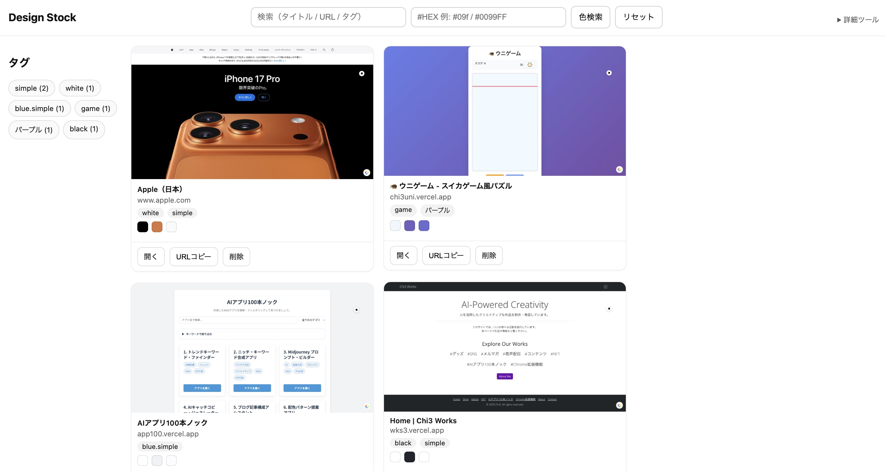
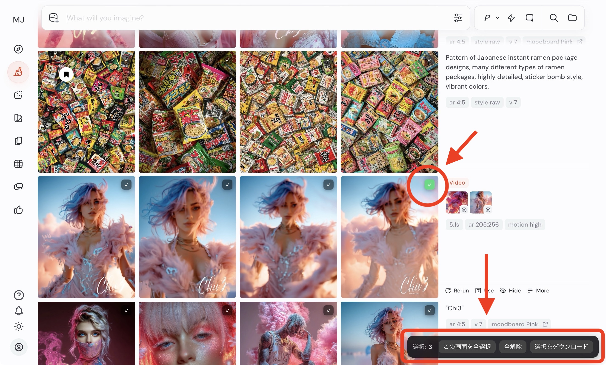

この度は、こちらのサイトよりメルマガにご登録いただき、誠にありがとうございます！
こちらは、ご登録いただいた方限定の特典コンテンツページです。
📜 ご利用にあたってのお願い
この特典コンテンツは
メルマガ登録者さま限定
の非公開資料です。快適にご活用いただくため、下記のルールをお守りください。
-
個人利用の範囲内でご使用ください
SUZURI
の販売や Midjourney
の制作に役立てる目的であれば、作品づくり・勉強・検証など自由にお使いいただけます。
-
転載・再配布・二次販売は禁止です
本文・画像・コード・sref などを、そのまま／一部改変を問わず
SNS・ブログ・動画・書籍・販売教材などへ公開することはできません。
-
チームや友人との共有もご遠慮ください
複数名でご利用になりたい場合は、各自でメルマガ登録をお願いします。
-
引用が必要な場合は事前にご相談ください
例外的に紹介やレビューをしたい場合は、必ず事前にご連絡ください。許可のない引用は全て転載扱いとなります。
著作権は発行者に帰属します。ルールをお守りいただけない場合、今後の配布を見送る場合がありますのでご了承ください。
🗨️
やりたいことが見えてくるAIとの対話プロンプト集
モヤモヤ・迷い・アイデア不足に効く3つの問いかけ。コピーしてAIチャットに貼り付けてお使いください。
① 気持ちがもやもやしているときに
「なぜ？」と聞かれると答えづらいときに。気持ちを押しつけず、引き出してくれます。
自分の気持ちがなんだかモヤモヤしています。
何に引っかかっているのか、うまく言葉にできません。
はっきり答えられなくてもいいので、私が答えやすいように、やさしく少しずつ質問してくれませんか？
② やりたいことがぼんやりしているときに
モヤモヤの正体が見えてくると、気持ちに余白が生まれます。
今、自分が何に悩んでいるのか、何をしたいのかがぼんやりしています。
でも何かある気がしていて、整理できたら少しスッキリしそうです。
はっきり答えられなくてもいいので、やさしく問いかけてくれるとうれしいです。
③ アイデアを出したいけど浮かばないときに
「何かやってみたいけど、思いつかない…」そんなときの起爆剤に。
何か作ってみたい気持ちはあるのですが、具体的なアイデアがまったくありません。
普段の生活や、小さなことでもいいので、思いつくきっかけになりそうな問いかけをしてもらえるとうれしいです。
👕 SUZURI
2025年春：売れるデザイン＆企画ガイド
公式アナウンスと直近セール情報をベースに、これから作品を作る方向けにまとめました。
1. 今すぐ狙うべきアイテム
-
ビッグシルエットT / ヘビーウェイトT
11周年BIGセールで最大 1,000
円引き。主力カテゴリなので販売量が多い。
参考リンク
-
刺しゅうフリースジャケット
2025/3/5
登場の新定番。ミニロゴ・1〜2色刺しゅうが推奨。
参考リンク
-
ステッカー／缶バッジ
低単価＆100
円引き枠でまとめ買いされやすい。
-
定型アクリルキーホルダー
iOS
アプリで“スマホ完結”デザインが可能。
参考リンク
2. デザイン構成のコツ
-
ワンポイント × 2色以内 — コストを抑えつつ高見え。
-
1モチーフ + 短コピー —
スマホのサムネで瞬時に伝わる。
-
低単価 → 高単価の階段設計 — ステッカー → アクキー →
T シャツ → ジャケット。
3. 企画例
-
梅雨入り（6 月）
モチーフ：カエル ×
レインコート
配色：ミント & パープルグレー
展開：ステッカー
→ ドライＴシャツ
-
レトロ喫茶ブーム
モチーフ：ゆる動物 ×
クリームソーダ
配色：ソーダグリーン & 赤チェリー
展開：胸ワンポイント刺しゅうＴ
+ 背面ビッグプリントＴ
-
旅行・インバウンド
モチーフ：ミニロボ ×
ご当地名物
展開：アクキー 6 色セット → ビッグＴ → トート
4. 制作チェックリスト
-
ロゴ／線画を 太線 1 色 で 5 種作成（刺しゅう対応）
-
アクキーを 色替え 6 パターン 量産（iOS アプリで 10
分）
-
ステッカーを 背景透過 PNG + 白フチ で書き出し
- セール前日に SNS で値引き告知
- VRChat や 3D 派生商品の可能性を検討
5. 投稿用ハッシュタグ例
#SUZURI #Tシャツ
#アクリルキーホルダー #ステッカー
#ゆるキャラ #レトロポップ
#クリームソーダ #梅雨
まとめ
セール対象＝売れ筋 と心得て優先的に制作。ワンポイント × 質感
で差別化し、原価を抑えて高見えを狙う。低単価でファンを呼び込み、高単価で利益を回収
する階段戦略が王道。まずは「刺しゅうロゴＴ」と「定型アクキー」のセットから始めてみましょう！
📈 SEOチェックリスト（AI検索対策込み）
Webページ制作から公開後の運用、そしてAI検索で拾われるための工夫までを一気に振り返れるチェックリストです。必要なときに開いて、まとめてコピーしてご活用ください。
【SEOチェックリスト（汎用）—AI検索対策込み】
====================
作成時（Webページ制作中）にできるSEO対策
====================
■ 技術（Technical）
- URL設計：短く意味のある英単語、不要パラメータ排除、正規URL（<link rel="canonical">）
- メタ情報：固有の<title>（32文字前後）と<meta name="description">（80–120文字）
- 見出し構造：1ページ1つの<h1>、論理的なh2/h3階層
- 画像最適化：WebP/AVIF、width/height指定、loading="lazy"、適切なalt
- パフォーマンス（Core Web Vitals）：LCP/INP/CLSを意識（画像の先読み/遅延、CSS縮小、JS分割、フォント最適化）
- 内部リンク：語句リンク・パンくず（構造化データ対応）、関連導線を各所に
- モバイル対応：レスポンシブ、タップ領域、フォームUX（入力補助属性）
- インデックス制御：robots.txt / meta robots、noindex誤設定の確認
- サイトマップ：XML（通常＋画像/動画）、Search Console登録
- 国際化・多言語：hreflang、地域ターゲット（ローカルならNAP表記の統一）
- 構造化データ（JSON-LD）：Organization / WebSite / BreadcrumbList、LocalBusiness、FAQPage / HowTo / Product / Article / VideoObject 等
- エラーハンドリング：404/410、301リダイレクト（旧URL→新URL）
- セキュリティ：HTTPS/HTTP2、基本ヘッダー（HSTS, CSPは可能な範囲で）
- アクセシビリティ：ランドマーク、代替テキスト、フォームラベル
■ コンテンツ（On-page）
- 検索意図に合うページ目的（情報/取引/比較/ローカル）を明確化
- キーワードの網羅と自然な配置（タイトル/見出し/本文/代替テキスト/アンカーテキスト）
- 1ページ1テーマ原則＋重複/薄い内容の回避
- E-E-A-T補強：運営者/著者プロフィール、実績、顧客の声、根拠リンク
- 画像・動画の文脈テキスト、字幕や文字起こし（Video/Audio）
====================
作成時以外（公開後・運用）にできるSEO対策
====================
■ コンテンツ運用
- 記事やLPの追加：入門/比較/事例/FAQ/トラブルシュート
- 既存ページの定期リライト：最新化・事例追記・内部リンク強化
- 競合ギャップ分析：上位ページの見出し/網羅性/体験談差分を埋める
- FAQ整備：検索ログ・問い合わせから継続拡充（FAQPage構造化データも）
■ 外部シグナル
- 被リンク：一次情報（調査/データ/テンプレ/ツール）公開、業界寄稿、メディア/コミュニティ露出
- ブランド検索増加：SNS/メール/オフライン連動（名指し検索を増やす）
- ローカルSEO：Googleビジネスプロフィール最適化、最新投稿・写真・Q&A、口コミ獲得＆返信
■ テクニカル運用
- Search Console/Analytics監視：クエリ・掲載順位・CTR/INP/LCP/エラー
- クローラビリティ：内部リンク網の見直し、孤立ページ解消、サイトマップ更新
- ログ分析：クロール頻度/滞留箇所、不要パラメータ除外
- A/Bテスト：タイトル/導入文/CTA位置でCTR・CVRを改善
- ページ速度の継続改善：画像CDN、キャッシュ、クリティカルCSS、JS削減
■ ガバナンス
- コンテンツ更新ルール：担当・更新周期・品質基準・評価指標
- 法令/表現チェック：薬機/景表/著作権等の遵守
====================
AI検索（SGE / AI Overviews / Perplexity 等）への対策
====================
■ 回答されやすい形式
- 明確なQ&A/FAQ構造（質問→結論→根拠→手順/注意）
- スニペット化しやすい記述：結論先出し、数字、箇条書き、表
- How-to/手順/チェックリスト/ベストプラクティスなど“完成形の型”を増やす
- 用語定義・比較表・計算式・テンプレの提供（引用価値UP）
■ 機械可読性の向上
- 構造化データ（FAQPage/HowTo/Product/Recipe/LocalBusiness/Article 等）
- 表・リスト・見出しを正しいHTMLでマークアップ
- 画像の代替テキスト＋キャプション
- オリジナル図版/データにキャプション＋ソース明記
■ 権威性・信頼性（E-E-A-T）
- 著者情報（専門性/資格/実績）と最終更新日
- 一次情報（独自調査・事例・統計・スクリーンショット）
- 参照・出典への適切な外部リンク
- 組織情報の明確化（所在地/連絡先/運営者/ポリシー/免責）
■ 発見性の向上
- トピッククラスタ設計：ハブページ＋関連詳細記事群で内部リンク
- 「○○とは」「○○のやり方」「○○の比較」「○○の料金」「○○の失敗例」等、検索意図別に面を構成
- マルチモーダル：動画/音声を同ページに埋め込み＋文字起こし
■ 最新性と継続性
- 更新日の見える化と実際の内容更新
- 速報＋深掘りの二層構成（要約→後で検証/根拠追加）
■ 生成AIに引用されやすくする工夫
- ブランド名・固有表現の統一、自己紹介の1〜2行を用意
- オープンに使えるデータ/テンプレを公開（引用動機を作る）
- 英語ページ/要約の併設（多言語AIへの露出を増やす）
====================
優先度の高い初期セット & 運用ルーチン
====================
■ 初期セット（まずはここから）
1) タイトル/ディスクリプション/見出し最適化
2) LocalBusiness/FAQの構造化データ
3) 重要ページの内部リンク網（ハブ→子ページ）
4) 画像のWebP＋alt＋LCP画像の最適化
5) Googleビジネスプロフィール整備＋レビュー獲得
6) 「よくある質問」「料金」「比較」「アクセス」「問い合わせ」の整備
7) Search Console登録＆XMLサイトマップ送信
■ 月次ルーチン
- CTRが低いページのタイトル/導入をA/Bテスト
- 新トピックをFAQ/ブログへ反映
- 競合の新見出し/事例をモニタリングして不足分を追補
- 速度/INP確認、不要JS削減、画像再圧縮
- 口コミ/被リンク施策を毎月1本（寄稿/資料公開/コラボ等）
🧰 Chrome拡張機能で制作をサポート
インストール手順
- ダウンロードボタンから zip ファイルを取得し、解凍します。
- Chrome で
chrome://extensions を開き、拡張機能管理ページを表示します。
- 右上の「デベロッパーモード」をオンにします。
- 「パッケージ化されていない拡張機能を読み込む」をクリックし、解凍したフォルダを選択します。
- ピン留めやショートカットを設定して、すぐに使い始めましょう。
ブラウザに一時保存用のトレイを追加し、気になるページやテキストをサッと控えておける拡張機能です。
-
ドラッグ可能なフローティングアイコン:
画面の邪魔にならない位置にドラッグ＆固定可能。
-
クリックでサイドバー表示:
保存したカードを一覧し、Escキーや外側クリックですぐ閉じられます。
-
ページ全体・選択テキストの保存:
Alt キーを押しながら操作するとページ全体、選択範囲だけの保存も簡単です。
開発背景やアップデートの詳細は
こちらの記事と
アップデートレポートで紹介しています。

表示中のサイトをワンクリックでアーカイブし、スクリーンショット・URL・タイトル・カラーパレットを自動保存。タグは手動で整理でき、ウェブ制作の参考にしたいデザインを逃さずストックできます。
- 保存したサイトは一覧で管理し、タグ・テキスト・カラーで横断検索が可能。
- バックアップとインポートに対応し、複数環境でも同じライブラリを再現できます。
-
記事「Design Stockが生まれた背景と使い方」で活用事例を紹介しています。

Midjourney の Create ページで表示中の画像にチェックを付け、選んだものだけをまとめてダウンロードできる拡張機能です。
- 画像右上に ✓ アイコンが表示され、必要なものだけ選択可能。
- ダウンロードを実行すると「midjourney+日付」フォルダが自動生成され、整理も簡単です。